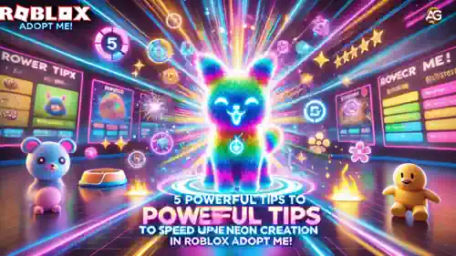

Criar pets Neon no Roblox Adopt Me! é um processo emocionante, mas que consome muito tempo. São necessárias horas de dedicação para evoluir os pets, e às vezes parece que a jornada nunca vai acabar. Mas e se houvesse maneiras de acelerar as coisas? A boa notícia é que, com as estratégias certas, você pode criar Neons muito mais rápido e aproveitar ainda mais o jogo.
Neste artigo, vou compartilhar as melhores dicas e truques para ajudá-lo a evoluir seus pets de forma eficiente, economizando tempo e esforço. Se você é iniciante ou um jogador experiente, essas estratégias tornarão o processo mais suave e recompensador. Prepare-se para transformar sua coleção de pets e criar pets Neon mais rápido do que nunca!

Dicas e truques para ajudá-lo a evoluir seus pets no Roblox Adopt Me! Imagem gerada por IA.
Dica 1: Favoritize o Pet no Qual Você Está Trabalhando
Ao criar um pet neon, é fácil perder o controle do pet no qual você está trabalhando. Tentar encontrá-lo novamente pode levar uma eternidade. Para evitar isso, certifique-se de favoritizar o pet no qual você está trabalhando. Dessa forma, ele sempre será fácil de encontrar, e você não perderá tempo procurando por ele.
Aqui está um exemplo rápido: imagine que você está trabalhando em uma vaca, e ela continua desaparecendo. Você está rolando pela lista de pets, e não é esta vaca, nem aquela. Finalmente, você a encontra, mas demorou muito tempo. Se você tivesse a favoritado, teria encontrado instantaneamente. Então, sempre favorite seu pet!
Dica 2: Evolua Seus Pets em Etapas
Ao criar um pet neon, você precisa evoluir seus pets para marcos específicos. Para manter as coisas organizadas e eficientes, evolua todos os seus pets para o mesmo nível de idade antes de passar para a próxima etapa. Por exemplo, evolua todos os seus pets para Adolescente (Teen), depois Pós-Adolescente (Post-Teen) e, finalmente, Adulto (Full Grown).
Eu cometi o erro de ter um Adulto, dois Adolescentes e um Recém-Nascido (Newborn), e foi uma bagunça. Me arrependi porque isso fez o processo parecer mais longo e desorganizado. Então, mantenha todos os seus pets na mesma etapa para se manter motivado e no caminho certo.
Dica 3: Seja Produtivo Enquanto Espera
Vamos encarar, evoluir pets pode ser chato. Enquanto você espera que as tarefas sejam concluídas, assista a alguns vídeos no YouTube, role o TikTok, faça algumas tarefas domésticas ou até termine sua lição de casa. Isso ajudará a curar o tédio e manterá você motivado.
Em vez de ficar apenas olhando para a tela esperando seu pet evoluir, use esse tempo de forma produtiva. Você vai sentir que está realizando algo, e o tempo passará mais rápido.
Dica 4: Crie uma Sala de Grind
Essa dica não é absolutamente necessária, mas pode facilitar muito sua vida. Crie uma sala ou casa de grind onde você tenha tudo o que precisa para evoluir seus pets rapidamente. Na sua sala de grind, você precisará de uma cama, um piano, um banheiro ou chuveiro, e comida e água.
Ter tudo em um só lugar torna o processo mais rápido e eficiente. Você não precisará ir para outras casas para completar tarefas e economizará muito tempo. Aqui está um exemplo: estou na minha casa de grind, e tudo é muito mais fácil. Tenho tudo o que preciso para quase todas as minhas tarefas e não preciso ir para outras casas. É um divisor de águas!
Dica 5: Use uma Conta ALT
Essa é uma dica de profissional! Se você tem uma conta ALT, pode usá-la para acelerar o processo de criação de pets neon. Funciona assim: troque o pet que você está transformando em neon para sua conta ALT e, em seguida, evolua-o em ambas as contas ao mesmo tempo. Isso dobrará seu progresso e tornará o processo duas vezes mais rápido.
Por exemplo, se você está trabalhando em uma vaca, troque-a para sua conta ALT e, em seguida, evolua-a em ambas as contas. Você verá a barra de progresso avançar muito mais rápido e terá seu pet neon em pouco tempo. É uma jogada genial e funciona perfeitamente!
Conclusão
Aqui estão elas! Essas são minhas 5 principais dicas para criar pets neon mais rápido no Adopt Me!. Espero que essas dicas ajudem você a acelerar o processo e tornar o jogo mais divertido. Se achou este artigo útil, me avise comentando o emoji do macaco 🐒 abaixo.
Lembre-se, paciência e consistência são essenciais ao criar pets no Roblox Adopt Me!. Esteja você evoluindo sozinho ou em equipe com amigos, manter-se organizado e usar as estratégias certas tornará o processo muito mais suave.
Fique de olho em eventos e bônus especiais no jogo que podem ajudá-lo a evoluir os pets ainda mais rápido. Boa jogatina e boa sorte criando seus pets neon dos sonhos! 🌟
Muito obrigado por ler, e nos vemos no próximo artigo. Tchau!
Você gostou do nosso Guia de como conseguir PET Neon em Adopt Me? Há algo que não entendeu ou gostaria de sugerir mudanças? Convidamos você a se juntar à nossa sessão de comentários na página do Alexandre Games Blog. Não hesite em expressar sua opinião, clarificar suas dúvidas e compartilhar sua sugestões. Clique no botão abaixo para começar: